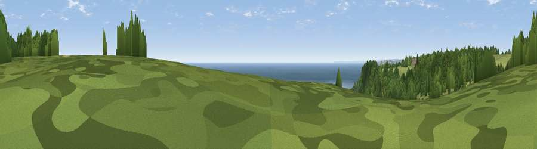

Viewpoint near Uplyme
#887 in England · top 4% of its area beats it · near Uplyme · path 114 mWhere it is
The exact computed spot (SY 30088 90375). Click the marker for map links.
Public access: the nearest public right of way is about 114 m away — the final stretch may cross private land. Computed from Natural England's CRoW access layer and OpenStreetMap rights of way — not the legal definitive map. Always verify locally.
The view, rendered

A 360° render of this exact spot computed from the terrain model, tree cover and land cover — summer colours, afternoon light, calibrated against photographs of famous viewpoints. Real trees, hedges and buildings will differ in detail.
The panorama
Grey silhouette: terrain skyline in each direction (720 bearings, Earth curvature and refraction included). Dashed green: skyline with trees (+15 m) and buildings (+8 m) as obstacles. Blue strip: how far the ground is visible on each bearing.
Where the view opens
Wedge length = distance to the farthest visible ground on that bearing (vegetation-aware). Rings at 10, 25 and 50 km.
What fills the view
53% water · 33% woodland · 12% grassland ·
Angular shares of the visible panorama (visual magnitude), not map area. Landscape diversity 0.45 (0–1 Shannon).
Key numbers
More beautiful places nearby
The staircase of upgrades: each row has a higher view potential than everything closer. Driving times are estimates from straight-line distance, calibrated against real road routing — check an actual route before setting out.
| Place | Direction | Drive | Score |
|---|---|---|---|
| Viewpoint near Axmouth | WSW · 1 km | ~4 min | 82.4 |
| Golden Cap | E · 11 km | ~20 min | 88.7 |
| The Knoll | E · 24 km | ~39 min | 91.0 |
50.70879, -2.99150 · source: screening · position refined by local search. Computed location — check access rights before visiting.